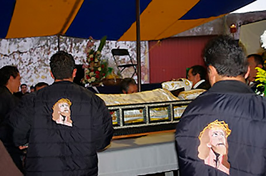

Tlaxco es una ciudad típica de Tlaxcala habitada por Otomíes desde el siglo XIV y el municipio en 1866.
Se encuentra ubicada a 2 mil 500 metros de altura, y tiene un clima semi-frío.
Es una región de abundante pulque y toros.
Princiapl gastronomía: Barbacoa de hoyo, Quesos Artesanales de Tenate, Requesón, Pulque Natural.
Se incorporó al programa Pueblos Mágicos en el año 2015
Fiesta de san agustin (28 de agosto)“El 28 de agosto, se lleva a cabo la festividad en honor al santo patrono: San Agustín. En donde se realiza la danza de los negritos, la música se crea con la solo utilización de un violín, los sones que tradicionalmente se ejecutan llevan el nombre del corte de la danza que se está ejecutando, asi se hallan nombres como “el saludo”, “la presentación”, “la promesa”, “son Cruzado”, “la cadena”, “la cruz”, respaldeado”, “pespunteado”, media vuelta”, “vuelta entera”, entre otros. |
Feria del Queso, la madera y el pulque, agosto.
la Feria del Queso, la Madera y el Pulque es un evento vibrante que celebra la rica herencia cultural y gastronómica de Tlaxcala y otras regiones de México. Es una oportunidad para que locales y visitantes se unan en la apreciación de la comida, la artesanía y las tradiciones que definen la identidad de la región. |
LA HUAMANTLADALa Fiesta del Calvario durante los domingos de Cuaresma es una celebración que combina elementos religiosos, culturales y comunitarios. A través de procesiones, escenificaciones, misas y actividades comunitarias, esta festividad ofrece una oportunidad para la reflexión espiritual, la expresión de la fe y la cohesión social. Es un testimonio del rico patrimonio cultural y devocional de las comunidades mexicanas que participan en ella. |